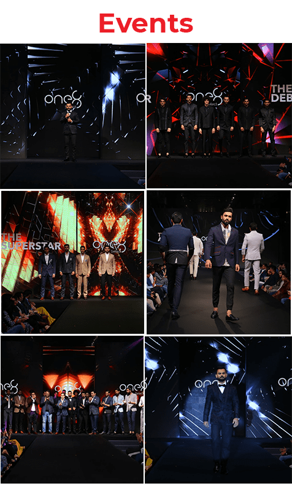
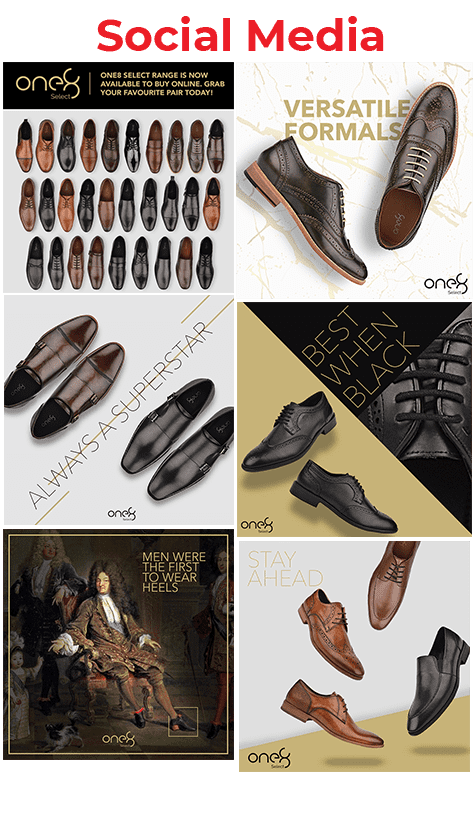
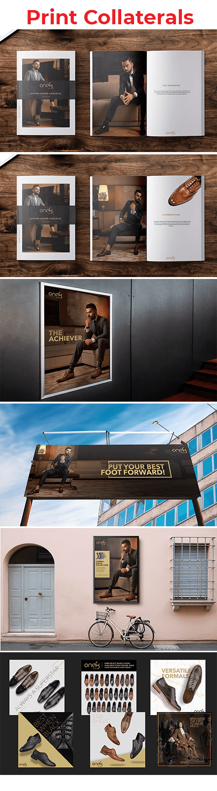

Use Virat Kohli's drive and confidence without allowing celebrity to overpower the footwear or brand character.
← Back to workYour best foot.
One8 Select · Integrated Launch
Your best foot.
Forward.
Project overview
Launch a label.
Signal a point of view.
One8 Select brought Virat Kohli's personal style into a formal-footwear proposition designed for ambitious, fashion-conscious consumers.
The launch needed one premium idea that could move confidently across brand film, print, social media and a live runway event while keeping the product central.
- Film
- Brand Video
- Campaign Collaterals
- Digital
- Social Media
- Experience
- Launch Event
The launch challenge
Borrow recognition.
Build independent desire.
Make film, social, print and event feel like parts of one launch—not disconnected executions sharing a logo.
The creative platform
Your best foot
forward.
A familiar expression becomes a statement of ambition. The line connects the physical product to personal progress: dress with intent, enter with confidence and keep moving ahead.
The visual language stays deliberately controlled—tailoring, leather, monochrome space and measured gold accents create premium presence without excess.
The integrated rollout
One idea.
Every launch surface.
Brand film
Introduce the achiever mindset through a confident, cinematic portrait of the brand and its founder.
Print system
Carry product craftsmanship and campaign language into catalogues, posters, outdoor and point-of-view pieces.
Social launch
Build range, versatility and cultural wit into a flexible stream of product-led communication.
Live reveal
Turn the campaign world into a runway environment where product, founder and audience meet.
Campaign in the world
From first impression
to full presence.
The system scales without losing its restraint: bold enough for a runway screen, precise enough for a catalogue page and flexible enough for a fast-moving social feed.



The launch experience
A campaign people
could step inside.
01Anticipate
Social and print establish the attitude before the reveal.
02Encounter
The event turns campaign codes into a physical brand world.
03Explore
Runway and product moments give the range space to perform.
04Continue
Post-launch content carries the same identity into ongoing communication.
The outcome
A launch with polish.
A platform with range.
One connected idea gave One8 Select a coherent arrival across moving image, physical space, print and social—while keeping footwear, confidence and forward motion at the centre.
Clear positioning
A formal-footwear label expressed through modern ambition.
Consistent presence
Every channel carries the same disciplined visual attitude.
Launch momentum
The event and content system extend one reveal into a wider story.
Put your best foot forward.Then keep moving.
Planning a brand launch?